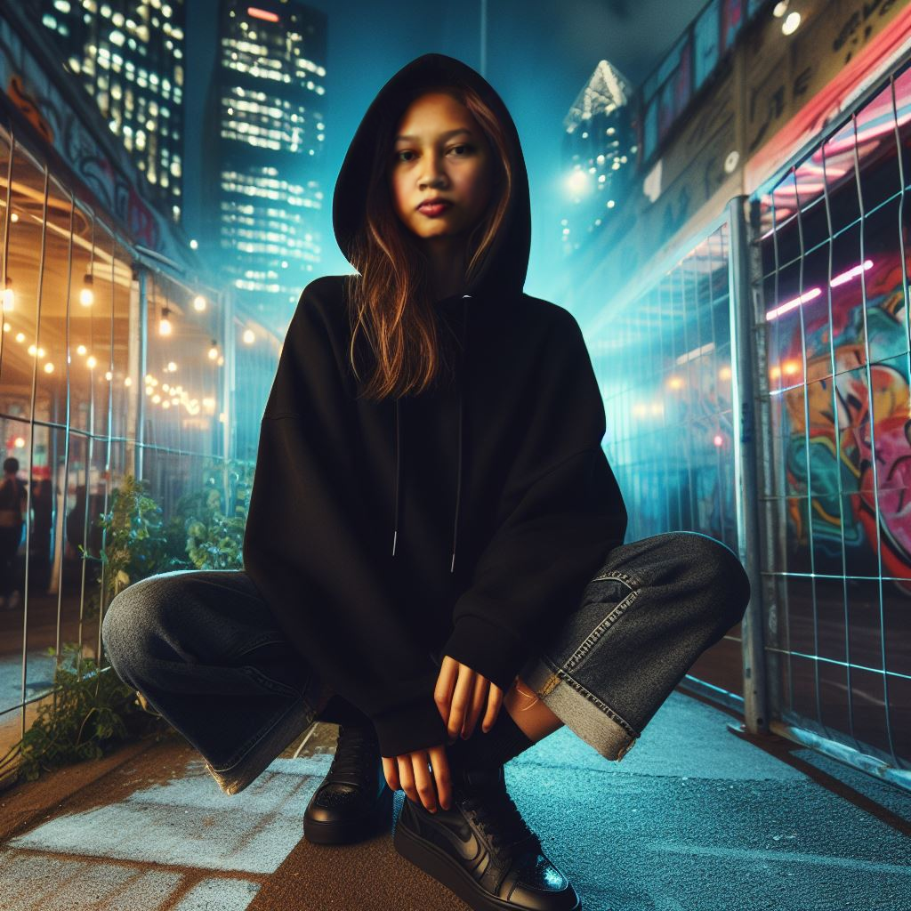
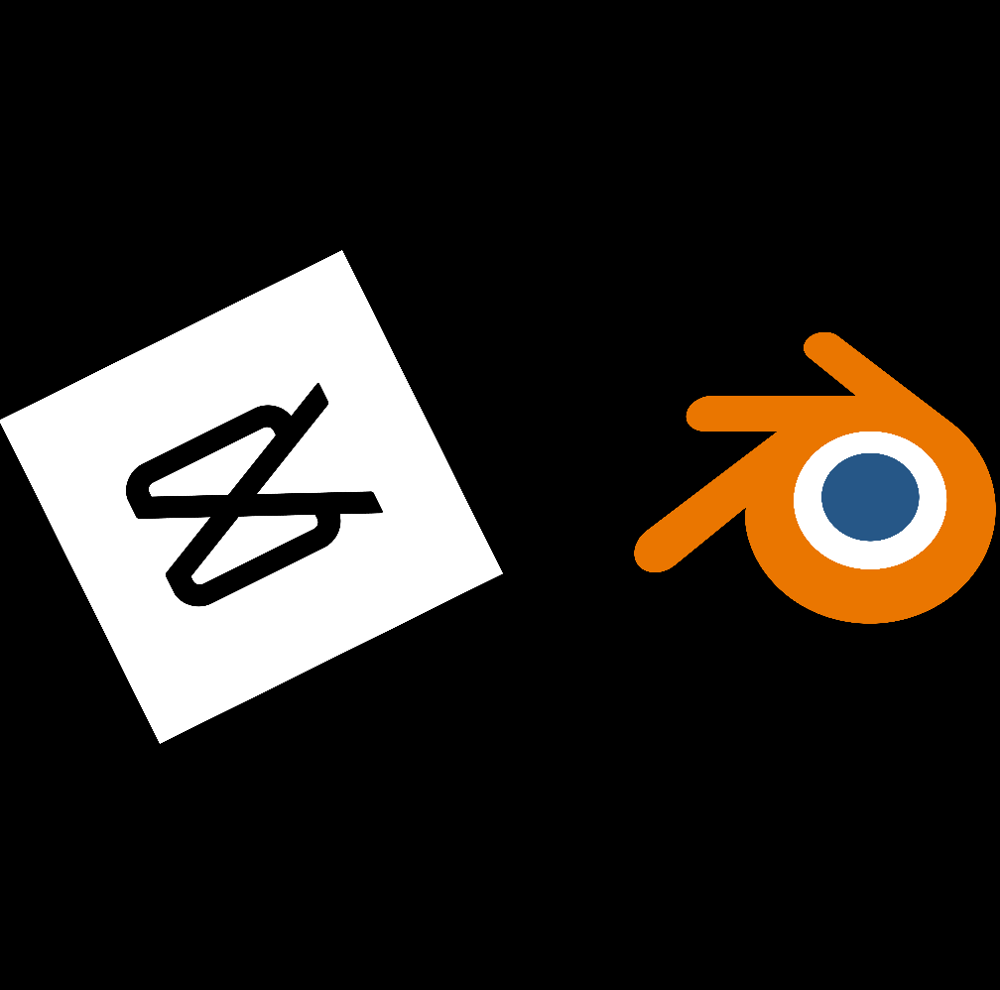
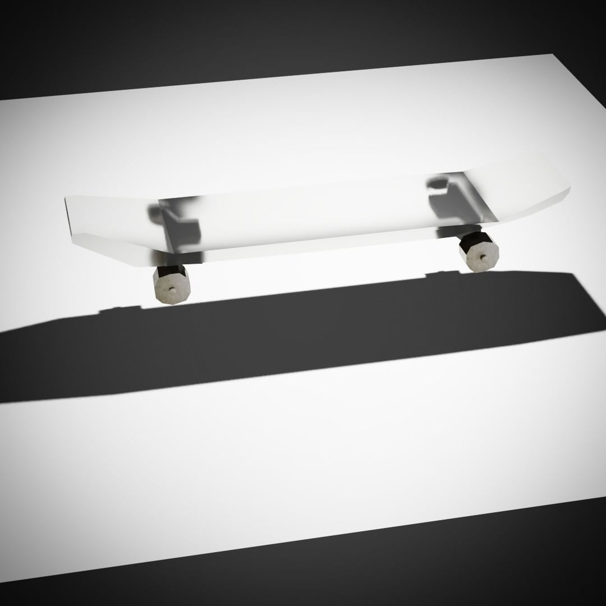
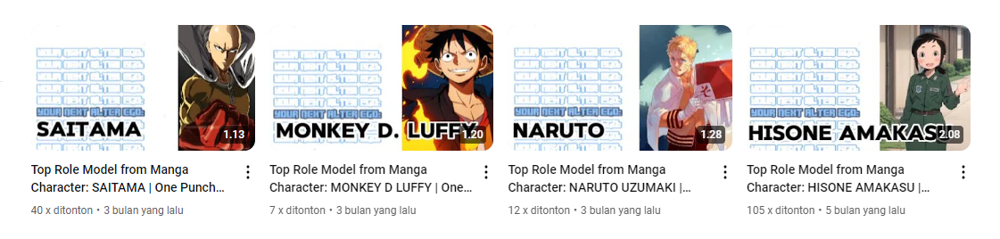

About Me

I am a 3D Designer and Content Creator who has a special interest in 3D modeling. In addition, I am also active in creating creative content through online platforms.
My motto is "Create to Inspire, Innovate to Impress". As a 3D Designer and Content Creator, I am committed to creating designs that inspire people to be more enthusiastic in their lives. And besides creating, I also try to continue to innovate so that every content I create is able to make an impressive impression on my audience.
Skills

I have mastered a variety of technologies and tools that support the creative and development process. Here are some of my key skills:
- 3D Modelling (Blender)
- Video Editing (Capcut)
Projects
Below are some of the projects I have worked on that reflect my expertise and creativity in various fields.
3D Design Assets

This is a 3D modeling project featuring a skateboard model with a minimalist design and high precision. The skateboard shape looks clean with a reflective or semi-transparent surface material, giving it a modern and futuristic feel. The skateboard wheels look simple but well-proportioned, with clear shadows on the surface, adding depth and realism to this 3D composition.
Youtube Content

This project features a series of YouTube videos created by me, focusing on famous characters from popular manga such as Saitama from One Punch Man, Monkey D. Luffy from One Piece, Naruto Uzumaki from Naruto, and Hisone Amakasu from Hisone to Maso-tan. These videos explore the theme of "Top Role Model" for each character, highlighting their inspiring qualities that make them role models for many fans.
Each thumbnail features an eye-catching visual with a distinctive image of the main character, paired with text that outlines the main topic. This project demonstrates the creators’ commitment to providing educational and entertaining content, while also inviting viewers to understand the deeper side of each fictional character. The video lengths vary from around 1 to 2 minutes, which is ideal for capturing the attention of viewers in a short but informative way.